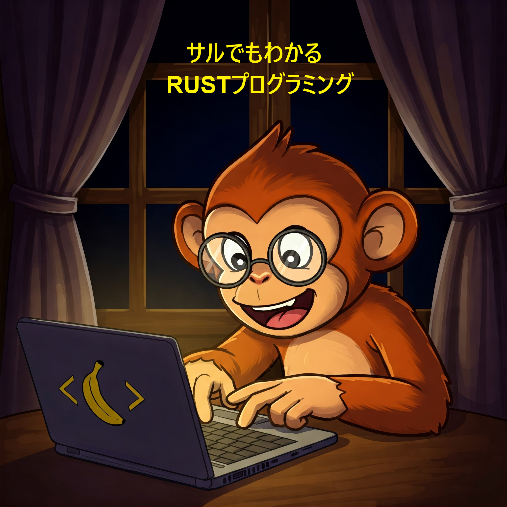

👋 Hi, I’m @HidekiAI (Hideki A. Ikeda), I've "profressionally" been programming since April 1989.
My first professional job was mainly in Assembly lanaguage - 6502/65C816, Z80, Motorolla 68000, as well as C.
Other languages I can safely get by (because I've coded professionally) are C++11, C#, and F#.
My professional experiences have been mainly been reflected by video game industries, but as hobbies and self educations, I do try to keep up with other intersts such as machine-learning and microservices.
🌱 I’m currently (and probably never stop) learning C++17 (for stability in libraries) and Rust (for functional aspect with C++ performance) for several years, and IMHO Rust is my all-time favorite.
👀 The projects you'd find here: I’m interested in writing/working on projects that are somewhat useless (useful TO ME, but not too useful to you) but FUN TO ME... They are mainly in the languages I fancy at the moment, but at times the language chosen are mainly because of the supported libraries.
💞️ I’m looking to collaborate on any open source libraries that are network-oriented, but am also interested in video game related libraries and projects.
📫 I guess you can reach me on LinkedIn username HidekiAI